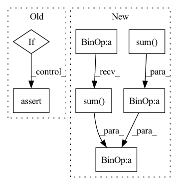

Pattern ID :974
Before Change
for i in range(target.shape[1]):
if i != self.ignore_index:
dice_loss = dice(predict[:, i], target[:, i])
if self.weight is not None:
assert self.weight.shape[0] == target.shape[1], \
"Expect weight shape [{}], get[{}]".format(target.shape[1], self.weight.shape[0])
dice_loss *= self.weight[i]
total_loss += dice_lossAfter Change
dice = 0.
// dice系数的定义
for i in range(pred.size(1)):
dice += 2 * (pred[:,i] * target[:,i]).sum(dim=1).sum(dim=1).sum(dim=1) / (pred[:,i].pow(2).sum(dim=1) .sum(dim=1).sum(dim=1) +
target[:,i].pow(2).sum(dim=1).sum(dim=1).sum(dim=1) + smooth)
// 返回的是dice距离
dice = dice / pred.size(1)
return torch.clamp((1 - dice).mean(), 0, 1)In pattern: SUPERPATTERN
Frequency: 3
Non-data size: 7
Instances Fragment ID: 3501108
Project Name: lee-zq/3dunet-pytorch
Commit Name: 070a8816879b33e97a9541e35cc5b2bfaf1bcd76
Time: 2021-05-22
Author: zq_lee@163.com
File Name: utils/loss.py
M Class Name: DiceLoss
N Class Name: DiceLoss
M Method Name: forward(3)
N Method Name: forward(3)
M Parent Class: nn.Module
N Parent Class: nn.Module
M File Name: utils/loss.py
N File Name: utils/loss.py
M Start Line: 78
M End Line: 93
N Start Line: 18
N End Line: 27
Before Change
predict = F.softmax(predict, dim=1)
for i in range(target.shape[1]):
if i != self.ignore_index:
dice_loss, _ = dice(predict[:, i], {"targets": target[:, i]}, device)
if self.weight is not None:
assert self.weight.shape[0] == target.shape[1], \
"Expect weight shape [{}], get[{}]".format(target.shape[1], self.weight.shape[0])
dice_loss *= self.weights[i]
total_loss += dice_lossAfter Change
inputs = inputs.view(-1)
targets = targets.view(-1)
intersection = (inputs * targets).sum()
dice = (2.*intersection + self.eps)/ (inputs.sum() + targets.sum() + self.eps)
loss = 1 - dice
Fragment ID: 3501085
Project Name: kaylode/theseus
Commit Name: 4e1fe493ae162a9f96ed6d7fe175133bce081fae
Time: 2022-02-19
Author: pmkhoi@selab.hcmus.edu.vn
File Name: theseus/segmentation/losses/dice_loss.py
M Class Name: DiceLoss
N Class Name: DiceLoss
M Method Name: forward(4)
N Method Name: forward(4)
M Parent Class: nn.Module
N Parent Class: nn.Module
M File Name: theseus/segmentation/losses/dice_loss.py
N File Name: theseus/segmentation/losses/dice_loss.py
M Start Line: 68
M End Line: 84
N Start Line: 12
N End Line: 23
Before Change
if mask is None:
mask = torch.ones_like(gt).bool()
assert mask.size() == gt.size()
if not isinstance(mask, torch.BoolTensor):
assert torch.all(torch.logical_or(mask == 0, mask == 1))
mask = mask.bool()
return self.smooth_l1_loss(pred[mask], gt[mask])
After Change
if mask is None:
mask = torch.ones_like(gt).bool()
assert mask.size() == gt.size()
loss = self.smooth_l1_loss(pred * mask, gt * mask)
return loss.sum() / (mask.sum() + self.eps)
Fragment ID: 3501017
Project Name: open-mmlab/mmocr
Commit Name: 43c50eee8207824a8c655342eb4b51d743db64ca
Time: 2022-07-20
Author: gaotongxiao@gmail.com
File Name: mmocr/models/textdet/losses/common/l1_loss.py
M Class Name: MaskedSmoothL1Loss
N Class Name: MaskedSmoothL1Loss
M Method Name: forward(4)
N Method Name: forward(4)
M Parent Class: nn.Module
N Parent Class: nn.Module
M File Name: mmocr/models/textdet/losses/common/l1_loss.py
N File Name: mmocr/models/textdet/losses/common/l1_loss.py
M Start Line: 44
M End Line: 49
N Start Line: 47
N End Line: 50